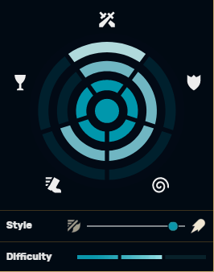
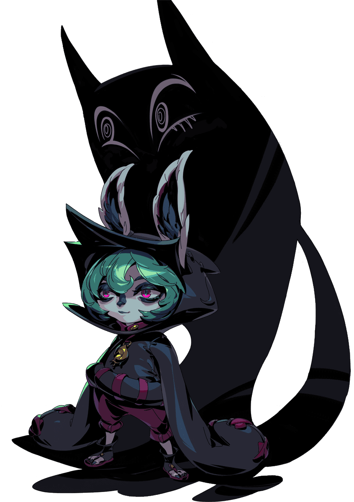
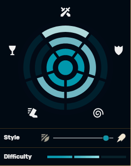

gameplay
| Base statistics level: 1-18 | ||||||||||
|---|---|---|---|---|---|---|---|---|---|---|
|
 |
||||||||||||||||||
|---|---|---|---|---|---|---|---|---|---|---|---|---|---|---|---|---|---|---|
| VEX | ||||||||||||||||||
| THE GLOOMIST | ||||||||||||||||||
|
||||||||||||||||||
|  |
Vex, also known as The Gloomist, is a villainous playable character in the multiplayer online battle arena game League of Legends. She made her debut in the Rise of the Sentinels event as an antagonist.
She is a gloomy emo yordle from Bandle City, whom hates happiness and color. After travelling to the Shadow Isles, she met the Ruined King and took a fancy to him, being the one who amplified his control over the Black Mist in the first place so she can spread misery all over Runeterra.
Set to be the one-hundred and fifty-seventh champion added to the game, Vex will be played in the middle lane.
| evil-doer | ||||||||||||||||||
|---|---|---|---|---|---|---|---|---|---|---|---|---|---|---|---|---|---|---|
|  | ||||||||||||||||||
|
pick:
ban:
"And then i told her, 'get outta my room!' And she said, 'This is my house,young lady and' Oh, hang on, Shadow. I'll finish this later."
"Blegh, just got here already over it."
"Other people are here? Ugggh. Great."
"This is going to be... awful. In a very good way. A good, awful way. You know what i mean!"
"hmm. What color should i wear today? Black Or charcoal"
"Before i met the black mist i lived in a world of color and happiness. i was so lost."
"Welcome to sad Town. Population, Me. Everuone else, get out."
"Ugghhh this is gonna take foreverrr. Why is everything so far?"
"Okay, Shadow. Wake me when we hit something."
"I could start a club for people who hate people! Ehh,but no one would show up."
"I am not cute. I am dark and forlorn and... hopelessly norbid."
"Why do i even wake up in the morning? Oh, right. To make people miserable."
"I wouldn't say i ran away from home. More like... trudged. Yeeeah, trudged."
"Shadow i think i'm gonna start calling you... 'scar'."
"It is not a stupid name. 'shadow' is a stupid name."
"Shadow, can i get,like five more minutes alone? 'Kay,fine."
"Let's turn these smiles upside down."
"Ugh, can we get some rain clouds in here?"
"D'ughh, look at that tree. So stupid."
"Uggh... more of the same."
"Yep. The glass is half empty."
"It's not a phase and i won't grow out of it."
"I can feel it. Someone's happy over there."
"Think sad thoughts. Think sad thoughts."
"I'll show them the meaning of apathy. Or not."
"I'm only in this place cause i hate it."
"Okay... time to take it down a level."
"Shadow carry meee."
"Yeah i wore this yesterday. What about it?"
"I could really use less friends."
"Bleech. sunlight."
"Every silver lining has a dark cloud."
"Man... walking suuuucks"
"This place is so getting harrowed."
"If i can't be happy ono one can."
"Calm down, Shadow I'm trying to sulk."
"I'm coming. I'm coming"
"Death is the true meaning of life. Whoa! That's deep."
"Wish my hood covered all of my face."
"Ugh. This place has way too many colors"
"Ugh. Stop coping me Shadow."
"Guess I'll mone over here."
"You know what Shadow? Sometimes... I almost don't hate you."
"This is as far as my eyes van roll."
Amumu-"you're sad and dead? we should hang out."
Dr.Mundo-"no doctoers. I already told you being sad makes me happy.
Karthus-"Ah, you had me at death lost me at singing."
Lucian-"two guns? Could you try any harder?"
Lux-"Oh,no. Happiness and rainbows? I'm gonna barf twice."
Veigar-"Hey, Veigar? you're at a ten. i need you to take it down to like... a two."
Viego-"You know what, Viego? I liked your earlier stuff better."
Viego-"I don't ahve to listen to you, Viego. Yuo're not my real dad."
Yasuo-"Ugh, Yasuo... I canalready tell we are not gonna vibe."
Yuumi-"I'm not really a cat person. I'm more of a... nothing person."
Yordle-"Just keep walkin', yordle. I got nothin' to say to you."
Sentinel-"Oh, look at me i'm a sentinel saving the world from darkness."
shadow iles-"Sup, ghost. We hanging later? Cool."
Unbound thresh-"Saw you're human now,Thersh. never thought you'd be the one to go normie."
anyone-"So you're the reason i have to be here today?"
anyone-"Lets make this easy i'll wait here and you go die."
anyone-"Just give up. I did"
anyone-"Another person to kill. Shadow, can you handle it?"
anyone-"life sucks... but at least im not you."
anyone-"You'd like bandle city. It sucks too."
Taunt-"Honestly you taunt yourself just by being you."
Taunt responce-"Don't care. Don't care. Don't carrrre."
joke-"Ahh, Viego... is okay. I mean, he's whatever... I guess"
joke responce-"Don't care. Don't care. Don't carrrre."
"Ha."
"I'm danciiiiing. Happy?"
"Who cares?"
"Life is pain"
"'Sup."
"Ugh do we have to?"
"Can you just not?"
"Die or something."
"Despair."
"Yuo don't understand me!"
"Back. Off!"
"SIGH."
"You're the worst."
"pow."
"Ugh. People."
"So what're we doin'?"
"That's close enough."
"Who are you again?"
"Whatever."
"Are you smiling?"
"Efforrrt."
"What?"
"Have some misery."
"You should frown more."
"Personal space people!"
"Don't talk to me."
"Ugh!"
"Ugghh!"
"Whatever."
"'Kay."
"Lose the pep."
"Bring it down a notch."
"Seriously?"
"Don't even think about it."
"I wouldn't do that."
"Well, look at you."
"Nnnnnnnope."
"Comin' in sad!"
"Annnd this ooone."
"Wheeee."
Follow-up.
"Super meh."
"Do the thing Shadow."
"Feel what i feel."
"Meh!"
"Awesome! I-I mean...Pfft whatever..."
"Well that happened."
"One less person to deal with."
"Way to die, normie."
You're lucky. Being a ghost is so cool.
"see ya never."
"You look better this way."
"that's whatcha get for tryin'."
"That's better."
pentakill-"Cool."
"I am so over this place."
"(sigh) Later."
"Oh. Where are we goin' Y'know what? It doesnt matter."
"Finally... the part where i get to leave."
"if anyone needs me i'll be back... uhh, i-i dunno. Whenever."
"Darkness, take me. Seriously i'm burning up here."
"Time to get up already?"
"Please... put me back in my misery."
"That... Wasn't as cool as i thought it'd be."
"Well that was some quality alone time."
"Okay, i'm awake. Stop already!"
""I get to do all again? Yaay.
"Owwww..."
"So what?"
"Good for... you."
"Whoaaa... Cooool..."
| Base statistics level: 1-18 | ||||||||||
|---|---|---|---|---|---|---|---|---|---|---|
|
|
||||||||||||||||||
|---|---|---|---|---|---|---|---|---|---|---|---|---|---|---|---|---|---|---|
| VEX | ||||||||||||||||||
| THE GLOOMIST | ||||||||||||||||||
|
||||||||||||||||||
|  |
In the black heart of the Shadow Isles Crest icon.png Shadow Isles, a lone yordle trudges through the spectral fog, content in its murky misery. With an endless supply of malaise and a powerful shadow in tow, Vex shields herself from the pep and happiness of the outside world, and all of the irksome 'normies' who occupy it.
Growing up in Bandle City Crest icon.png Bandle City, Vex never felt she belonged. The whimsy and color of the yordle realm was cloying to her. Despite the best efforts of her parents, she never seemed to find her 'yordle spirit' or any like-minded friends, and chose to spend most of her time sulking in her room.
There, she found an unlikely soulmate in her own shadow. It was black (her favorite color), and it didn’t talk—the perfect companion for the sullen youth. She learned to entertain herself with the shadow, performing gloomy pantomimes for her own amusement.
Alas, it was just a shadow, incapable of shielding Vex from the loathsome cheerfulness that surrounded her. Surely something more lay in store. Something darker. Something sad. Something just like her.
That something arrived in the form of a Harrowing, thick clouds of Black Mist that billowed through Bandle City, stirring its residents to panic. While most yordles fought valiantly to beat back the Mist, Vex was intrigued by the foul miasma and began to follow it to its source.
When she arrived in the Shadow Isles, Vex couldn’t believe her eyes. Vast tracts of land and sea, devoid of all life and color, stretched out before her. Here, she could finally sulk, unbothered by the laughter and merriment of others.
As the days passed, Vex realized the Black Mist was having a strange effect on her. Her shadow shadow had taken on a new ghostly persona—much more lively and expressive than its host—and her benign yordle magic had transformed into something far more sinister. Vex could now spread her misery far and wide.
'Who made this wonderfully awful place?'' she wondered.
Her question was soon answered when the Ruined King, Viego Viego, appeared in the Isles, seeking to spread his Mist to all corners of Runeterra. Upon meeting Vex, Viego realized the yordle had a unique ability to spread despair, making people more vulnerable to his Harrowing. Vex, in turn, was inspired by his vision for a world covered in Black Mist. The two became fast allies and set out to turn the entire world into a harrowed wasteland.
Before Viego’s vision could be fully realized, Vex discovered his ulterior motive: to reclaim the soul of his dead queen Isolde, and reunite with her in matrimonial bliss. She shuddered in disgust, feeling betrayed that the man she had trusted to kill the world’s happiness had, in fact, been seeking it himself. Vex left Viego to be defeated by the Sentinels of Light, his dreams of a ruined world dashed upon the stones of the Camavoran wreckage. Alone once more, she watched in disappointment as the world returned to the bright, colorful place she had always hated. Finding a lasting melancholy was going to be tougher than she’d thought.
She knew one last place she could go—a surefire way to achieve the misery she craved. She paid a visit to her parents in Bandle City, eager to show them who she had become and bask in their disapproval.
The young yordle watched as her parents turned dumbstruck, still as tree stumps. Their expressions changed from shock, to denial, to reluctant acceptance.
'Honey. We don’t understand... this,' said her mother, motioning with her finger at Vex’s entire being.
'But we love you unconditionally,' said her father. 'And if you’re happy, we’re happy for you.'
Rolling her eyes, Vex released a loud, exasperated sigh. 'You guys are the worst,' she moaned.
She trudged out of her parents living room, anxious to return to the Shadow Isles where she could sulk undisturbed.

Dawnbringer Vex cost: 1350RP
patch 11.19 champion VEX added